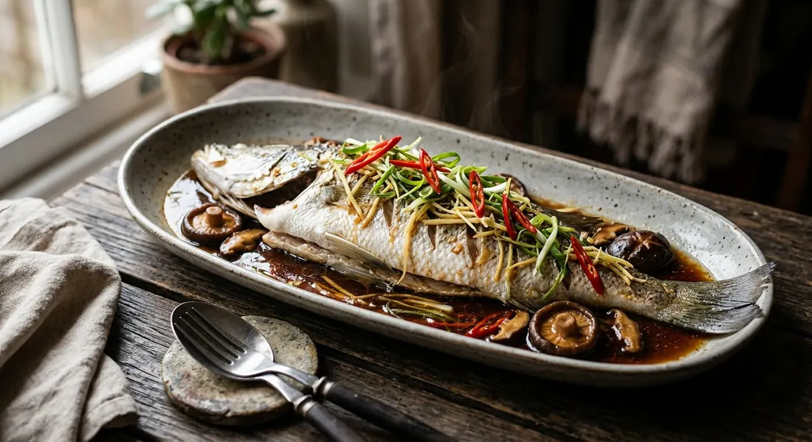

Steamed whole fish in soy sauce — sea bass or tilapia steamed over ginger, then finished with a hot sweet-savoury soy dressing, sesame oil, spring onion and chilli. The Chinese-Thai classic.

ปลานึ่งซีอิ๊ว
Pla nueng see lew is the quiet star of Thai Chinese-style cooking — a whole fish, steamed on a bed of ginger, then dressed at the table with hot soy, sesame oil and fine shreds of ginger, spring onion and chilli. It is the dish ordered for celebrations and family meals, and it appears on UK Thai menus alongside its louder lime-and-chilli cousin, pla neung ma nao.
The dish is Cantonese at heart — think steamed sea bass in soy, Hong Kong style — but Thai cooks make it sweeter and heavier on the ginger, and they steam the fish on the bone, always whole.
| Thai | English | Amount |
|---|---|---|
| ปลากะพง | Whole sea bass or tilapia, scaled, gutted, fins trimmed | 1 (700-800g) |
| ขิง | Ginger, half sliced, half finely julienned | 100g |
| กระเทียม | Garlic, lightly crushed | 5 cloves |
| เห็ดหอม | Fresh shiitake mushrooms, sliced | 100g |
| ต้นหอม | Spring onions, julienned | 3 |
| พริกชี้ฟ้าแดง | Red spur chillies, julienned | 2 |
| Thai | English | Amount |
|---|---|---|
| ซีอิ๊วขาว | Light soy sauce | 3 tbsp |
| น้ำมันงา | Sesame oil | 1 tbsp |
| น้ำตาลทรายแดง | Brown sugar | 1 tsp |
| เหล้าจีน | Chinese cooking wine | 1 tbsp |
| น้ำร้อน | Hot water | 3 tbsp |
One detail matters more than any other: the ginger goes under the fish. A bed of sliced ginger and crushed garlic lifts the fish off the plate and steams it from below, and the ginger's vapour neutralises the compounds that make steamed fish smell fishy. Fish steamed on a bare plate, no matter how fresh, tastes noticeably duller.
The dressing is poured over at the last second, boiling, so it wilts the raw garnish and releases the sesame and ginger aromas all at once. It is a finishing move worth keeping — the difference between a steamed fish and a great one.
This recipe is translated from the following Thai-language sources. Where they disagree, we've said so.
1. Kapook — pla kapong neung see-ew (sea bass) — https://cooking.kapook.com
2. Wongnai — pla thapthim neung see-ew (red tilapia) — https://www.wongnai.com/recipes/ugc/cec6106147dd4853bdeb140420d974fe
3. Wongnai — pla hima neung see-ew (snowfish) — https://www.wongnai.com
4. Kapook — pla kao neung see-ew (grouper) — https://cooking.kapook.com